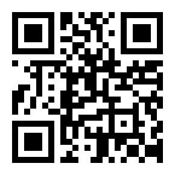

Entrando en el mundo de las personas inquietas
Free/Libre/Open Source software: FLOSS
@jjmerelo
¿Cómo aprendisteis todo?
Creación de identidad
¿Qué es lo libre/abierto?
... Una identidades
... Definida a través del aprendizaje social
¿Qué es lo libre/abierto?
Una relación productor/consumidor...
Basada en la libertad
Datos abiertos/transparencia
Redes libres/Mapas colaborativos
¿Cómo se llaman?
Oficinas de software libre
Hacklabs
* Beers
... Algunas necesidades económicas...
Una comunidad de gente inquieta:
facilita el aprendizaje
social
ayuda a evolucionar la
identidad personal y
sostiene a otras comunidades interrelacionadas
¿Cuál es la clave?
Identificación, apadrinamiento
y coordinación de la comunidad
... A través de la gestión del cambio
Explicando y visibilizando
Identificando necesidades emergentes
Ayudando a la autoorganización
Usando herramientas ligeras
Proporcionando una referencia
... Y un espacio físico
... Con pasión
Hablar de FLOSS es hablar de
valores
Y los valores son buen karma
Aprende
Participa
Cambia
Mira fijamente...

aka.ms/MTS75